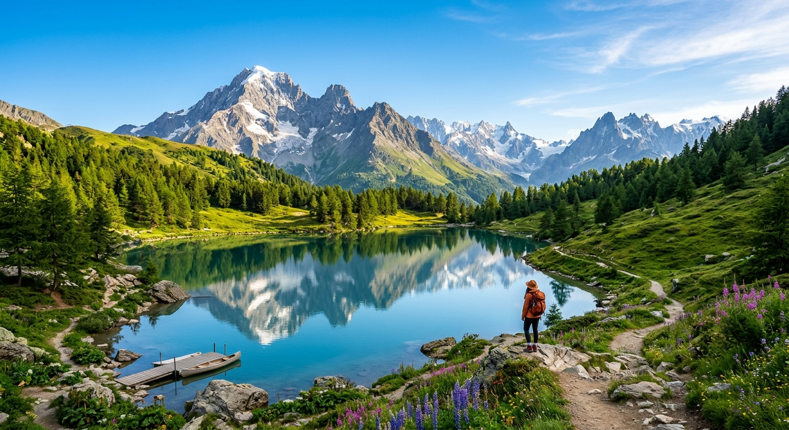

To travel is to free the soul. The entirety of the Earth lay beneath your feet, it is yours to explore. Below you will find a table that I have assembled for your information and convenience. Let your journey free your soul.
| Country | Cities to visit | Relevant info |
|---|---|---|
| Switzerland | Zurich, Graubünden | Graubünden is known for its dramatic alpine scenery and deep river valleys. Zürich is a global financial hub at the tip of Lake Zürich. |
| Japan | Tokyo, Osaka | Tokyo blends neon skyscrapers with historic temples. Osaka is famous for its lively street food culture and neon-lit nightlife. |
